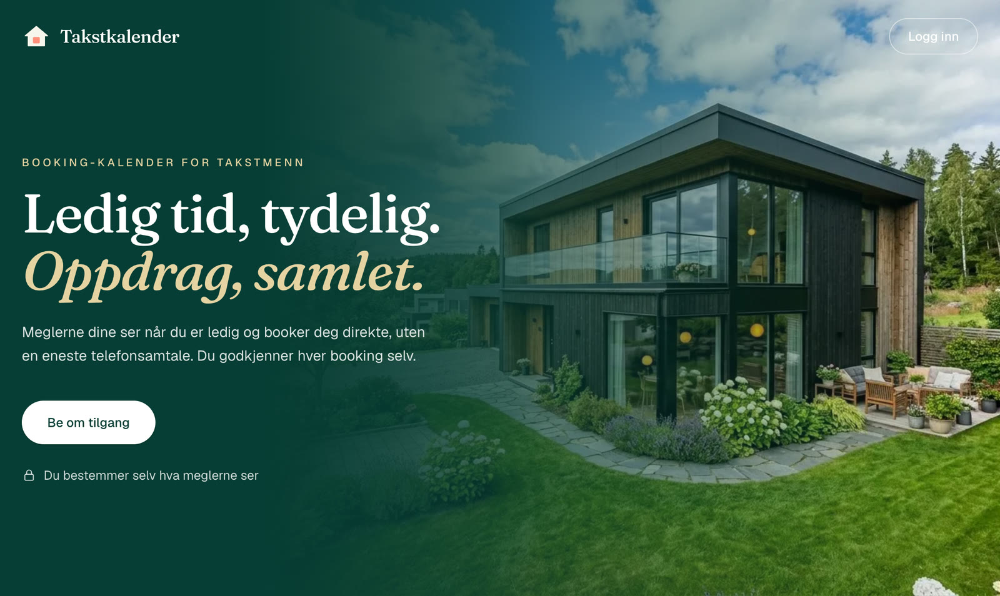
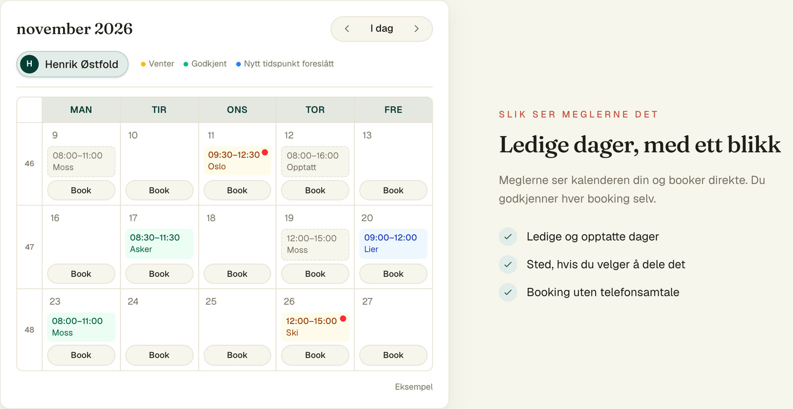
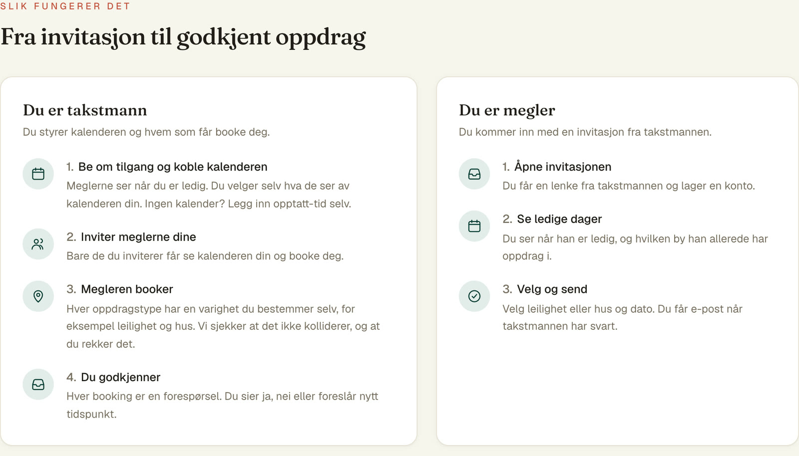
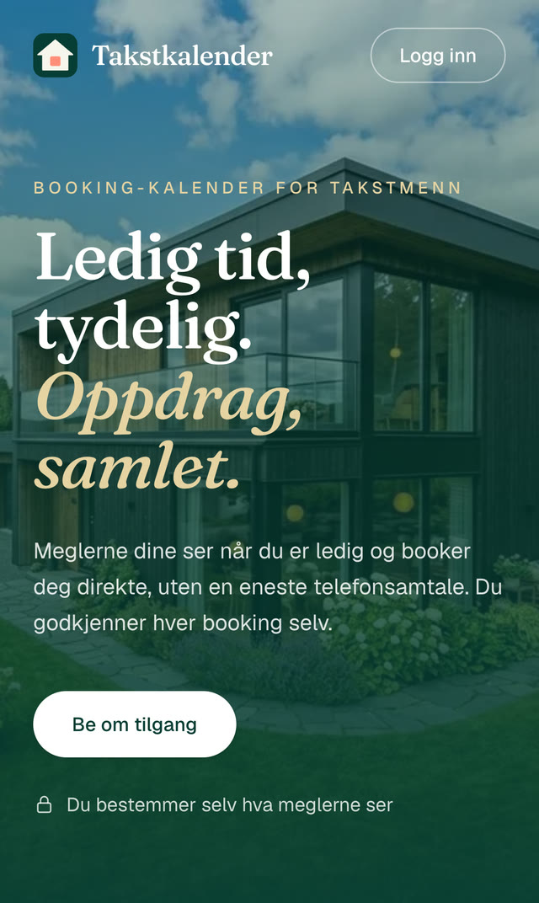

Takstkalender
En booking-kalender for takstmenn, der meglere ser ledig tid og booker direkte. Her er hva jeg gjorde.

Hvordan kan en megler booke en takstmann uten telefonsamtale?
Takstkalender skal gjøre det enkelt for meglere å se når en takstmann er ledig, og å booke direkte. Takstmannen beholder kontrollen og godkjenner hver booking.
Takstmannen velger selv hva meglerne ser av kalenderen, og bare inviterte meglere får tilgang. Meglerne slipper å ringe, og takstmannen får en samlet oversikt over oppdragene.
Hele appen, fra idé til drift
- Definertebehovet: meglere skal se ledig tid og booke direkte, mens takstmannen styrer hvem som får tilgang og godkjenner hver booking.
- Designetflyten fra invitasjon til godkjent oppdrag, for både takstmann og megler.
- Byggetkalendervisningen med ukeoversikt, fargekodet status (venter, godkjent, nytt tidspunkt foreslått) og en Book-knapp på hver dag.
- Vistested på dagene med oppdrag, hvis takstmannen velger å dele det, slik at meglerne kan booke i nærheten.
- Satte oppvarighet per oppdragstype, som leilighet og hus, og kontroll mot kollisjoner og at takstmannen rekker oppdraget.
- Koblet tiltakstmannens egen kalender, slik at ledig tid stemmer og dobbeltbooking unngås.
- La inntilgangsstyring: bare inviterte meglere ser kalenderen, og takstmannen bestemmer hva som vises.
- Lagetinnlogging og registrering, og sider for hjelp, personvern og kontakt.
Meglerne ser hvor takstmannen er
Megleren kan se hvor takstmannen allerede har oppdrag, hvis takstmannen velger å dele stedet. Ser megleren at takstmannen er i området, kan oppdraget legges til den dagen.
Det gir mindre reisetid for takstmannen.
Fra invitasjon til godkjent oppdrag
Be om tilgang og koble kalenderen
Takstmannen kobler kalenderen sin, eller legger inn opptatt-tid selv.
Inviter meglerne
Bare de som er invitert får se kalenderen og booke.
Megleren booker
Megleren velger oppdragstype og dato. Systemet sjekker at det ikke kolliderer.
Takstmannen godkjenner
Hver booking er en forespørsel. Takstmannen svarer ja, nei eller foreslår nytt tidspunkt.
Megleren kommer inn med en invitasjon, ser ledige dager og hvilken by takstmannen allerede har oppdrag i, og får e-post når takstmannen har svart.

Slik ser en megler kalenderen til en takstmann, med sted på dagene som har oppdrag. Dataene er eksempeldata.

Stegene for takstmann og megler.

Appen på mobil.
La oss ta en prat
Send meg en e-post eller en melding på LinkedIn, så tar vi det derfra. Jeg bor i Fredrikstad og tar oppdrag for hele Norge, på nettet eller på stedet.